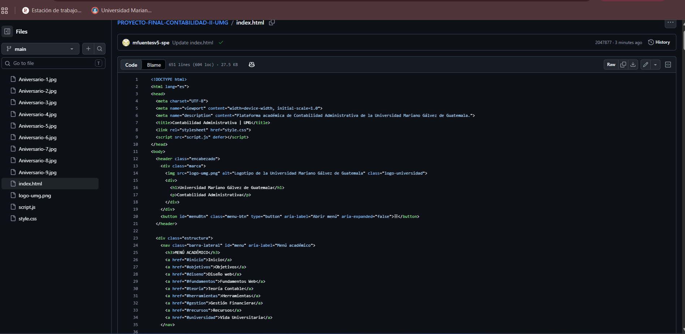

01
Identidad visual
La combinación de azul, blanco y dorado ofrece una presentación académica formal, con colores consistentes en los encabezados, botones y elementos informativos.
Contabilidad Administrativa
Plataforma educativa dedicada al estudio de los costos, presupuestos, indicadores de rentabilidad y herramientas financieras aplicadas a la toma de decisiones empresariales.
Explorar contenidosDesarrollar una página web educativa e interactiva que facilite el aprendizaje de los fundamentos de la Contabilidad Administrativa y su aplicación en la toma de decisiones empresariales.
El sitio está organizado para facilitar el acceso a los contenidos académicos, mantener una presentación visual uniforme y permitir su consulta desde distintos dispositivos.
La combinación de azul, blanco y dorado ofrece una presentación académica formal, con colores consistentes en los encabezados, botones y elementos informativos.
El menú lateral organiza los contenidos por temas y permite acceder a cada sección sin recorrer toda la página.
El diseño utiliza reglas de presentación que permiten ajustar los elementos a computadoras, tabletas y celulares.
Se utilizan títulos jerarquizados, tipografía clara, espacios adecuados y contraste entre texto y fondo.
Los contenidos avanzan desde los conceptos generales hasta los ejemplos y herramientas financieras.
Las calculadoras permiten ingresar valores, realizar operaciones y obtener resultados con interpretaciones.
Cronología de actividades del 19 al 24 de octubre de 2026.
Se realizó la planificación del proyecto, analizando los requerimientos académicos y organizando los contenidos de Contabilidad Administrativa que formarían parte de la página web.
Se desarrolló la estructura inicial de la página utilizando HTML5 y CSS3, incorporando una navegación organizada, diseño adaptable y colores inspirados en la identidad institucional de la Universidad Mariano Gálvez.
Se integraron los contenidos teóricos de Contabilidad Administrativa, Financiera y de Costos, destacando sus diferencias, objetivos e importancia para la toma de decisiones empresariales.
Se incorporaron herramientas financieras interactivas para facilitar el análisis de rentabilidad, costos, eficiencia, flujo de efectivo y evaluación de inversiones mediante indicadores como VAN y TIR.
Se revisó la organización de los contenidos, la navegación y el funcionamiento de las herramientas interactivas, con el propósito de mejorar la experiencia de los visitantes.
Se realizó la revisión general de la página web, verificando la presentación de los contenidos académicos, las herramientas financieras y los recursos visuales. Asimismo, se preparó el proyecto para su publicación mediante GitHub Pages.
Captura de pantalla de una parte del código utilizado para desarrollar el proyecto.

Fragmento del código fuente utilizado en la elaboración de la plataforma académica de Contabilidad Administrativa.
Organiza los títulos, párrafos, formularios, tablas, imágenes y enlaces que componen el sitio.
Define colores, tipografía, tamaños, distribución y presentación adaptable a distintas pantallas.
Permite validar datos, realizar cálculos financieros y controlar el menú de navegación.
Proporciona información económica y financiera para apoyar la planificación, el control y las decisiones internas de una organización.
Registra y comunica la situación financiera, los resultados y los flujos de efectivo de una entidad a usuarios internos y externos.
Identifica, acumula y analiza los costos asociados con productos, servicios, actividades y procesos.
Permanecen constantes en total dentro de un rango relevante de actividad, como determinados alquileres.
Cambian en total según el nivel de actividad, como los materiales directos utilizados en producción.
Integra los presupuestos operativos y financieros para planificar las actividades de una empresa.
Es el nivel de ventas en el que los ingresos cubren los costos totales, sin utilidad ni pérdida operativa.
Consisten en comparar alternativas utilizando información relevante para alcanzar los objetivos de una organización.
| Aspecto | Administrativa | Financiera | De costos |
|---|---|---|---|
| Objetivo | Apoyar decisiones internas | Informar resultados y situación financiera | Determinar y analizar costos |
| Usuarios | Gerentes y directivos | Usuarios internos y externos | Responsables de producción y administración |
| Enfoque | Presente y futuro | Principalmente hechos registrados | Costos históricos y estimados |
| Ejemplo | Presupuesto de ventas | Estado de resultados | Costo unitario de producción |
La información contable permite evaluar precios, controlar gastos, identificar productos rentables, administrar recursos y proyectar resultados. Su utilidad depende de que sea oportuna, relevante y confiable.
Las siguientes calculadoras utilizan ejemplos en quetzales. Ingresa los datos y presiona el botón correspondiente.
Determina las unidades necesarias para cubrir los costos fijos y variables.
PE = Costos fijos / (Precio unitario - Costo variable unitario)
Ejemplo: Q10,000 / (Q50 - Q30) = 500 unidades.
Expresa qué porcentaje de las ventas netas se convierte en utilidad neta.
Margen = (Utilidad neta / Ventas netas) × 100
Ejemplo: Q8,000 / Q40,000 × 100 = 20 %.
Compara el resultado real con el valor presupuestado.
Variación = Real - Presupuestado
Ejemplo: Q12,000 - Q10,000 = Q2,000.
Estos instrumentos ayudan a analizar rentabilidad, eficiencia, liquidez, patrimonio y proyectos de inversión.
Relaciona la utilidad neta con los activos promedio de una empresa.
ROA = (Utilidad neta / Activos promedio) × 100
Ejemplo: Q15,000 / Q100,000 = 15 %.
Analiza el peso de los gastos operativos sobre las ventas netas.
Indicador = (Gastos operativos / Ventas netas) × 100
Ejemplo: Q12,000 / Q50,000 = 24 %.
Calcula la diferencia entre entradas y salidas de efectivo de un período.
Flujo neto = Entradas - Salidas
Ejemplo: Q18,000 - Q12,500 = Q5,500.
Compara los costos relevantes de comprar un producto o fabricarlo internamente.
Comprar = Unidades × Precio de compra
Producir = Unidades × Costo variable + Costos fijos adicionales
Ejemplo: comprar 500 unidades a Q45 cuesta Q22,500; producirlas a Q32 más Q4,000 cuesta Q20,000.
Determina el patrimonio contable y la proporción de activos financiada mediante pasivos.
Patrimonio = Activos - Pasivos
Endeudamiento = (Pasivos / Activos) × 100
Ejemplo: activos Q100,000 y pasivos Q40,000: patrimonio Q60,000 y endeudamiento 40 %.
Evalúa una inversión descontando sus flujos futuros a una tasa que representa el rendimiento requerido.
VAN = -Inversión inicial + Σ [Flujo anual / (1 + tasa)^año]
Ejemplo: inversión Q10,000, tasa 10 % y flujos anuales Q4,000, Q4,500 y Q5,000.
Separa los años con comas y utiliza puntos para los decimales.
Determina la tasa de descuento que hace que el VAN de una inversión sea igual a cero.
VAN(TIR) = 0
Ejemplo: inversión Q10,000 y flujos anuales Q4,000, Q4,500 y Q5,000.
La calculadora admite una inversión inicial seguida de flujos anuales no negativos.
Los indicadores de rentabilidad permiten comparar resultados entre períodos y empresas similares. Los indicadores de eficiencia ayudan a identificar oportunidades de control de gastos.
Un VAN positivo indica que un proyecto supera la tasa de descuento utilizada, según los flujos estimados. La TIR debe compararse con el rendimiento mínimo requerido por el inversionista.
La decisión de comprar o producir también debe considerar calidad, capacidad instalada, plazos de entrega y costos de oportunidad.
Los siguientes recursos permiten ampliar los conocimientos relacionados con la contabilidad y el desarrollo web.
La celebración del aniversario de la Universidad Mariano Gálvez de Guatemala fue una experiencia especial que nos permitió compartir momentos de alegría, compañerismo y participación estudiantil. Durante esta actividad se vivió un ambiente lleno de entusiasmo, creatividad y espíritu universitario, destacando los Juegos Florales, los arreglos decorativos y las diferentes actividades culturales.
Esta celebración nos brindó la oportunidad de fortalecer la amistad entre compañeros, valorar el trabajo en equipo y disfrutar de experiencias fuera del salón de clases. Cada actividad representó una ocasión para convivir, crear recuerdos y sentirnos parte de nuestra comunidad universitaria.
En lo personal, fue una experiencia memorable que me permitió comprender que la formación universitaria también se enriquece mediante la convivencia, la cultura y la participación. Las fotografías presentadas reflejan algunos de los momentos más significativos de esta celebración y el orgullo de pertenecer a nuestra universidad.
La convención de la Universidad Mariano Gálvez de Guatemala representó una experiencia enriquecedora que nos permitió compartir momentos especiales con nuestros compañeros, fortalecer la convivencia y participar en actividades que contribuyen a nuestra formación integral.
Durante esta actividad se vivió un ambiente de entusiasmo, compañerismo y participación. La oportunidad de compartir experiencias y convivir con otros estudiantes permitió fortalecer los lazos de amistad y valorar la importancia de formar parte de nuestra comunidad universitaria.
En lo personal, esta experiencia fue una oportunidad para crear recuerdos, fortalecer nuestras relaciones y comprender que la vida universitaria también se construye mediante la integración y las actividades compartidas. Las siguientes fotografías reflejan algunos de los momentos más significativos de esta experiencia.